| 1 |
 |
Alice Clark |
The Complete Studio Recordings 1968-1972 |
2010 |
| 2 |
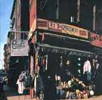 |
Beastie Boys |
Paul's Boutique |
1989 |
| 3 |
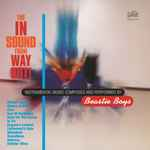 |
Beastie Boys |
The In Sound From Way Out! |
1996 |
| 4 |
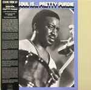 |
Bernard Purdie |
Soul Is... Pretty Purdie |
1972 |
| 5 |
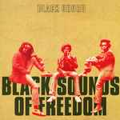 |
Black Uhuru |
Black Sounds Of Freedom |
1981 |
| 6 |
 |
Brass Construction |
Brass Construction |
1975 |
| 7 |
|
Caesar Frazier |
75 |
1975 |
| 8 |
|
Cane And Able |
Cane And Able |
1972 |
| 9 |
 |
Chairmen Of The Board |
Skin I'm In |
1974 |
| 10 |
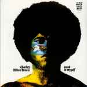 |
Charles Hilton Brown |
Owed To Myself |
1974 |
| 11 |
 |
Cocteau Twins |
Four-Calendar Café |
1993 |
| 12 |
 |
Culture |
Two Sevens Clash |
1977 |
| 13 |
 |
Curtis Harding |
Soul Power |
2014 |
| 14 |
|
Curtis Harding |
Face Your Fear |
2017 |
| 15 |
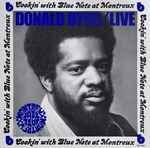 |
Donald Byrd |
Cookin' With Blue Note At Montreux |
2022 |
| 16 |
 |
Ebo Taylor, Pat Thomas, Uhuru Yenzu |
Hitsville Re-Visited |
1982 |
| 17 |
 |
Exit 9 |
Straight Up |
1975 |
| 18 |
|
Funkadelic |
Funkadelic |
1970 |
| 19 |
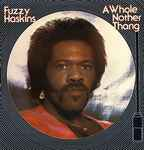 |
Fuzzy Haskins |
A Whole Nother Thang |
1976 |
| 20 |
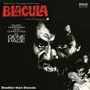 |
Gene Page |
Blacula (Music From The Original Soundtrack) |
1972 |
| 21 |
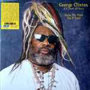 |
George Clinton, P-Funk All Stars |
Make My Funk The P-Funk |
1997 |
| 22 |
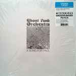 |
Ghost Funk Orchestra |
A Song For Paul |
2019 |
| 23 |
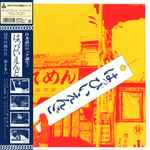 |
Happy End |
はっぴいえんど |
1970 |
| 24 |
 |
Happy End |
風街ろまん |
1971 |
| 25 |
|
Herbie Hancock, The Headhunters |
The Omaha Civic Auditorium 1975 |
2015 |
| 26 |
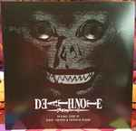 |
Hideki Taniuchi, Yoshihisa Hirano |
Death Note Original Score |
2006 |
| 27 |
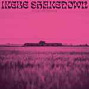 |
Ikebe Shakedown |
Kings Left Behind |
2019 |
| 28 |
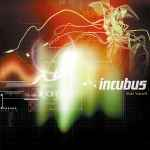 |
Incubus |
Make Yourself |
1999 |
| 29 |
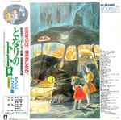 |
Joe Hisaishi |
となりのトトロ サウンドトラック集 = My Neighbor Totoro |
1988 |
| 30 |
|
John Coltrane |
My Favorite Things |
1961 |
| 31 |
|
John Williams, Steven Spielberg |
The Ultimate Collection |
2017 |
| 32 |
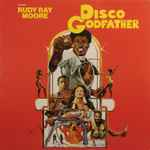 |
Juice People Unlimited |
Disco Godfather (Original 1979 Motion Picture Soundtrack) |
1979 |
| 33 |
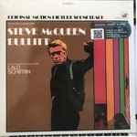 |
Lalo Schifrin |
Bullitt (Original Motion Picture Soundtrack) |
1968 |
| 34 |
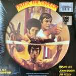 |
Lalo Schifrin |
Enter The Dragon (Original Sound Track From The Motion Picture) |
1973 |
| 35 |
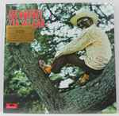 |
Lee Dorsey |
Yes We Can |
1970 |
| 36 |
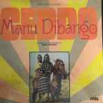 |
Manu Dibango |
Bande Originale Du Film Ceddo |
1977 |
| 37 |
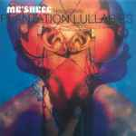 |
Me'Shell NdegéOcello |
Plantation Lullabies |
1993 |
| 38 |
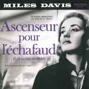 |
Miles Davis |
Ascenseur Pour L'échafaud = Lift To The Scaffold |
1958 |
| 39 |
 |
Miles Davis |
Kind Of Blue |
1959 |
| 40 |
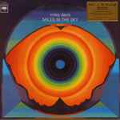 |
Miles Davis |
Miles In The Sky |
1968 |
| 41 |
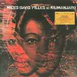 |
Miles Davis |
Filles De Kilimanjaro |
1969 |
| 42 |
 |
Miles Davis |
Miles In Tokyo (Miles Davis Live In Concert) |
1969 |
| 43 |
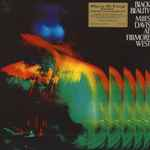 |
Miles Davis |
Black Beauty (Miles Davis At Fillmore West) |
1973 |
| 44 |
 |
Miles Davis |
Tutu |
1986 |
| 45 |
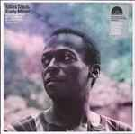 |
Miles Davis |
Early Minor (Rare Miles From The Complete In A Silent Way Sessions) |
2019 |
| 46 |
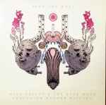 |
Miss Velvet & The Blue Wolf, George Clinton |
Feed The Wolf |
2019 |
| 47 |
 |
Mulatu Astatke & His Ethiopian Quintet |
Afro-Latin Soul |
1966 |
| 48 |
 |
Mulatu Astatke & His Ethiopian Quintet |
Afro-Latin Soul Vol. 2 |
1966 |
| 49 |
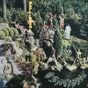 |
Parliament |
Osmium |
1970 |
| 50 |
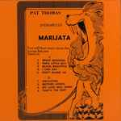 |
Pat Thomas, Marijata |
Pat Thomas Introduces Marijata |
1976 |
| 51 |
 |
Phoenix |
Monologue |
2018 |
| 52 |
|
Rage Against The Machine |
Live & Rare |
1997 |
| 53 |
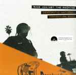 |
Rage Against The Machine |
Democratic National Convention 2000 |
2018 |
| 54 |
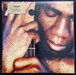 |
Richard Bona |
Reverence |
2001 |
| 55 |
 |
Robbie Hill's Family Affair |
Gotta Get Back : The Unreleased L.A. Sessions |
2013 |
| 56 |
 |
Roy Lee Johnson & The Villagers |
Roy Lee Johnson & The Villagers |
1973 |
| 57 |
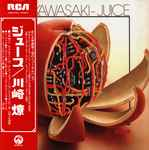 |
Ryo Kawasaki, Ryo Kawasaki |
Juice = ジュース |
1976 |
| 58 |
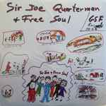 |
Sir Joe Quarterman & Free Soul |
Sir Joe Quarterman & Free Soul |
1973 |
| 59 |
 |
Snot |
Get Some |
1997 |
| 60 |
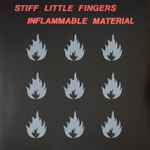 |
Stiff Little Fingers |
Inflammable Material |
1979 |
| 61 |
 |
Sébastien Tellier |
Sessions |
2006 |
| 62 |
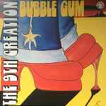 |
The 9th Creation |
Bubble Gum |
1975 |
| 63 |
 |
The Art Ensemble Of Chicago |
Les Stances A Sophie |
1970 |
| 64 |
 |
The Dave Brubeck Quartet |
Time Out |
1959 |
| 65 |
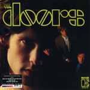 |
The Doors |
The Doors |
1967 |
| 66 |
 |
The Frank Cunimondo Trio |
Sagittarius |
1976 |
| 67 |
 |
The Miles Davis Quintet |
Cookin' With The Miles Davis Quintet |
1957 |
| 68 |
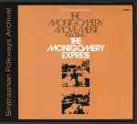 |
The Montgomery Express |
The Montgomery Movement |
1973 |
| 69 |
 |
The New Mastersounds, Lamar Williams Jr. |
Shake It |
2019 |
| 70 |
 |
The Parliaments |
Baby I Owe You Something Good |
2019 |
| 71 |
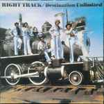 |
The Right Track |
Destination Unlimited |
1978 |
| 72 |
|
The Soul Searchers |
We The People |
1972 |
| 73 |
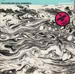 |
The Sure Fire Soul Ensemble |
Build Bridges |
2019 |
| 74 |
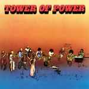 |
Tower Of Power |
Tower Of Power |
1973 |
| 75 |
|
Urban Dance Squad |
Mental Floss For The Globe |
1989 |
| 76 |
 |
Urban Dance Squad |
Life 'N Perspectives Of A Genuine Crossover |
1991 |
| 77 |
 |
Urban Dance Squad |
Persona Non Grata |
1994 |
| 78 |
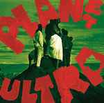 |
Urban Dance Squad |
Planet Ultra |
1996 |
| 79 |
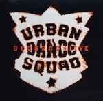 |
Urban Dance Squad |
Beograd Live |
1997 |
| 80 |
 |
Urban Dance Squad |
Artantica |
1999 |
| 81 |
|
Urban Dance Squad |
The Remix Collection |
xxxx |
| 82 |
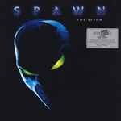 |
Various |
Spawn (The Album) |
1997 |
| 83 |
|
Various |
Ghost Dog: The Way Of The Samurai - The Album |
2000 |
| 84 |
 |
Various |
Stax Of Funk. The Funky Truth |
2000 |
| 85 |
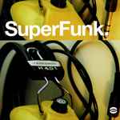 |
Various |
SuperFunk |
2000 |
| 86 |
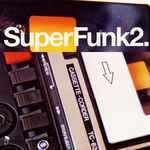 |
Various |
SuperFunk2. |
2001 |
| 87 |
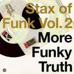 |
Various |
Stax Of Funk Vol. 2 (More Funky Truth) |
2002 |
| 88 |
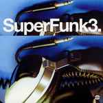 |
Various |
SuperFunk3. |
2002 |
| 89 |
|
Various |
Funk Soul Sisters. |
2003 |
| 90 |
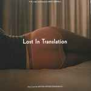 |
Various |
Lost In Translation (Music From The Motion Picture Soundtrack) |
2003 |
| 91 |
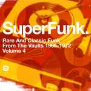 |
Various |
SuperFunk. Rare And Classic Funk From The Vaults 1966-1972 Volume 4 |
2004 |
| 92 |
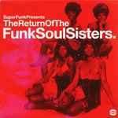 |
Various |
The Return Of The Funk Soul Sisters. |
2005 |
| 93 |
|
Various |
SuperFunk Is Back. Rare And Classic Funk 1968-1977 |
2007 |
| 94 |
|
Various |
Mighty SuperFunk. Rare 45s And Undiscovered Masters 1967-1978 (Volume 6) |
2008 |
| 95 |
|
Various |
SuperFunk's Mission Impossible. Hard To Find And Unreleased Funk Masters (Volume 7) |
2011 |
| 96 |
|
Various |
Cuban Rare Groove |
2017 |
| 97 |
 |
Various |
Function Underground: The Black And Brown American Rock Sound 1969-1974 |
2017 |
| 98 |
|
Various |
Nigeria Soul Power 70 (Afro-Funk ★ Afro-Rock ★ Afro-Disco) |
2017 |
| 99 |
|
Various |
Return To The Mothers' Garden (More Funky Sounds Of Female Africa 1971 - 1982) |
2019 |
| 100 |
|
Watsonian Institute |
Master Funk |
1978 |
| 101 |
|
Wax Tailor |
Hope & Sorrow |
2007 |
| 102 |
|
Wax Tailor |
Phonovisions Symphonic Orchestra |
2014 |
| 103 |
 |
Weldon Irvine |
Sinbad |
1976 |
| 104 |
 |
Yellow Sunshine |
Yellow Sunshine |
1973 |
| 105 |
|
فرقة العقارب, سيف أبو بكر, فرقة العقارب, سيف أبو بكر |
الجاز = Jazz, Jazz, Jazz |
1980 |